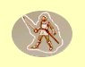

Magie zemì
Omráèení
Mana: 1, Cena: 100
Uhodí nestvùru magickou silou, znemo¾òujíce ji zaútoèit. Zároveò ji také odhodí dozadu, tak¾e skupina má ¹anci utéct èi zaútoèit, ne¾ se nestvùra probere. Silnìj¹í Magie Zemì znamená vìt¹í úèinek kouzla.
|  | Normální | Normální efekt |
| Expert | Silnìj¹í efekt | |
| Mistr | Nejsilnìj¹í efekt |
Magický ¹íp
Mana: 2, Cena: 200
Stvoøí a vypálí jeden magický ¹íp. Je jako obyèejný ¹íp, tak¾e se nemusí v¾dy trefit do cíle (s vy¹¹í dovedností v magii zemì roste ¹ance zásahu). Na rozdíl od vìt¹iny kouzel ho lze vykouzlit bez many, pokud se stanete mistry Magie Zemì. ©íp zpùsobuje 3-8 bodù zranìní.
| Normální | Seslání stojí 2 body many | |
| Expert | Seslání stojí 1 bod many. Rychlej¹í zotavení | |
| Mistr | Seslání stojí 0 many. Nejrychlej¹í zotavení |
Odolnost proti magii
Mana: 3, Cena: 300
Zvy¹uje odolnost v¹ech èlenù proti magii v závislosti na dovednosti v Magii Zemì.
| Normální | 1 bod odolnosti za bod dovednosti | |
| Expert | 2 bod odolnosti za bod dovednosti | |
| Mistr | 3 bod odolnosti za bod dovednosti |
Smrtící roj
Mana: 4, Cena: 400
Vytvoøí roj kousavého, bodavého hmyzu, který se vrhne na vybranou obì». Roj zpùsobuje pouze 5 bodù zranìní plus 1-3 body za bod dovednosti v Magii Zemì, ale nikdy nemine a typ útoku je fyzický, proti èemu¾ je odolných jen velmi málo potvor.
| Normální | Støední zotavení | |
| Expert | Rychlej¹í zotavení | |
| Mistr | Nejrychlej¹í zotavení |
Kamenná kù¾e
Mana: 5, Cena: 500
Zvy¹uje tøídu zbroje postavy o 5 +1 za ka¾dý bod dovednosti v Magii Zemì.
 |
Normální | Trvání 1 hodina +5 minut za bod dovednosti |
| Expert | Funguje na celou skupinu | |
| Mistr | 1 hodina +15 minut za bod dovednosti |
Èepele
Mana: 8, Cena: 750
Vystøelí rotující jako ¾iletka ostrou èepel na jednu potvoru. Kouzlo mù¾e minout a zranìní a ¹ance na zásah silnì zále¾í na dosa¾ené úrovni v Magii Zemì. Èepel zpùsobí 1-5 bodù zranìní za bod dovednosti v Magii Zemì.
| Normální | Støední zotavení | |
| Expert | Rychlej¹í zotavení | |
| Mistr | Nejrychlej¹í zotavení |
Odkamenìní
Mana: 10, Cena: 1000
Pokud je zakouzleno vèas, vrátí zkamenìlou postavu do normálního stavu. èím vy¹¹í je dovednost a úroveò Magie Zemì, tím déle trvá, ne¾ zkamenìlý dosáhne "bodu bez návratu", kdy u¾ kouzlo nepomù¾e. Potom u¾ zbývá, pokud neumíte Bo¾ský zásah, jen jediná mo¾nost zvrácení tohoto stavu, náv¹tìva chrámu.
| Normální | Funguje, pokud nebyl hrdina zkamenìlý déle ne¾ 3 minuty za bod dovednosti | |
| Expert | Funguje, pokud nebyl hrdina zkamenìlý déle ne¾ 1 hodinu za bod dovednosti | |
| Mistr | Funguje, pokud nebyl hrdina zkamenìlý déle ne¾ 1 den za bod dovednosti |
Kamenný výbuch
Mana: 15, Cena: 1500
Vypustí do svìta magický kámen, který vybuchne pøi kontaktu s potvorou nebo po urèité dobì. Kámen se mnohdy dovalí nìkam, kde zùstane a¾ do výbuchu, tak dejte pozor, abyste to neschytali. Výbuch zpùsobí 1-8 bodù zranìní za bod dovednosti v Magii Zemì.
| Normální | Støední zotavení | |
| Expert | Rychlej¹í zotavení | |
| Mistr | Nejrychlej¹í zotavení |
Zkamenìní
Mana: 20, Cena: 2000
Doèasnì promìní cíl na kámen. Zkamenìlé sochy jsou pak nezranitelné ¾ádným útokem.
| Normální | Trvání 5 minut za bod dovednosti | |
| Expert | Trvání 10 minut za bod dovednosti | |
| Mistr | Trvání 20 minut za bod dovednosti |
Kvìt smrti
Mana: 25, Cena: 3000
Vystøelí daleko do vzduchu magický kámen, který pak mohutnì vybuchne v nádherné explozi. Zpùsobí zranìní 20 plus 1 za ka¾dý bod v Magii Zemì. Lze pou¾ívat jen venku.
| Normální | Støední zotavení | |
| Expert | Rychlej¹í zotavení, vìt¹í dosah úèinku | |
| Mistr | Nejrychlej¹í zotavení, nejvìt¹í dosah úèinku |
Masivní deformace
Mana: 30, Cena: 5000
Na okam¾ik extrémnì zvý¹í hmotnost obìti, èím¾ zpùsobí vnitøní zranìní ve vý¹i 25% jeho zdraví a je¹tì dal¹í 2% za bod v Magii Zemì. Èím jsou silnìj¹í, tím více to odskáèou.
| Normální | Pomalé zotavení | |
| Expert | Rychlej¹í zotavení | |
| Mistr | Nejrychlej¹í zotavení |